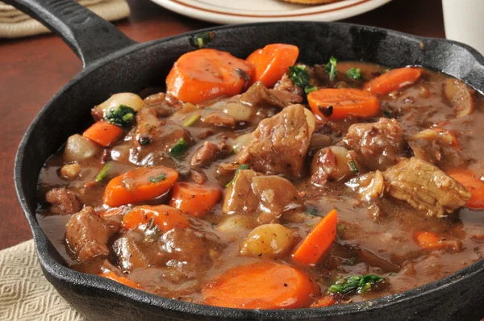

Beef Soup

Description
This tends to be a weekend favorite back home. As a child we would
tend to get this on Saturdays. Funnily enough it never started out as
my favorite. It took a while to grow on me and then I was looking
forward to the weekends to get it.
Ingredients
- beef
- maggi cock soup
- carrots
- irish potatoes
- breadfruit
- yam
- flour
- green onion
- red peas
- pumpkin
- cho-cho
- salt
Steps
- after pot of water is boiling add beef
- add pumpkin to boil as well and red peas
- add a pack of maggi cock soup to the mix
- add chopped up carrots and cho-cho
- in another container add 2 cups of flour
- add salt and a little water to make into dough
- once dough is made break of small bits
- roll small bits in flat of both palms
- add the rolled dough to the boling mix
- peel and slice breadfruit
- add peeled breadfruit to the boiling mix
- peel and add yam
- let cook until beef is tender